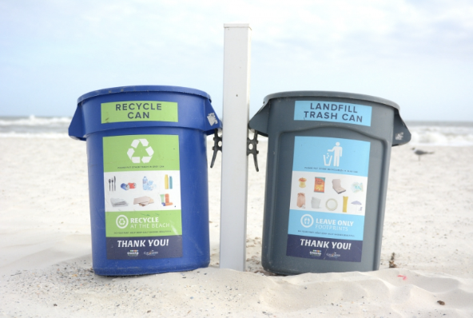
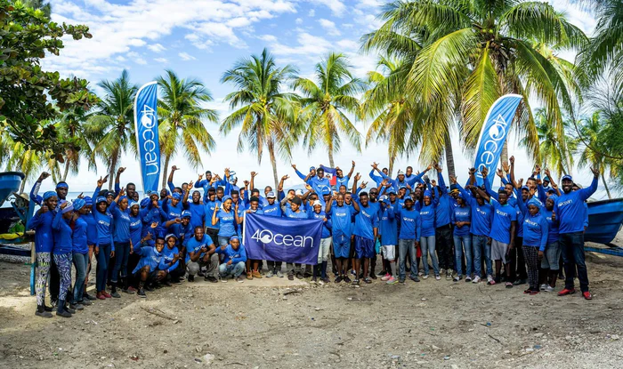
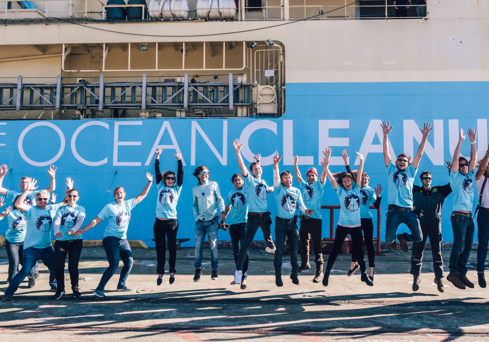
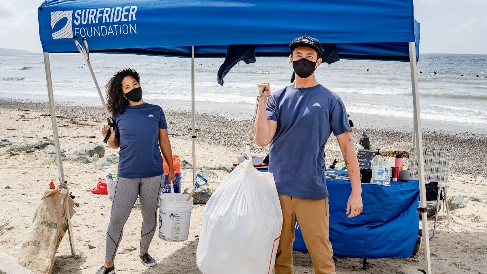

Getting Involved
Our oceans are vital to life on Earth, but pollution is threatening their health and ours. By reducing plastic use, participating in clean-ups, and supporting ocean-friendly policies, you can help turn the tide. Every action makes a difference!
How Can You Help Our Oceans?

Reduce, Reuse, and Recycle
Recycling helps prevent ocean pollution by reducing plastic waste that can end up in the sea. It diverts plastics from landfills and waterways, decreases the need for new plastic production, and minimizes litter. By recycling, we support a cleaner and healthier marine environment.

Beach and River Cleanups
Participating in or organizing beach and river cleanups helps prevent ocean pollution by directly removing debris before it reaches the sea. These cleanups collect trash, particularly plastics, that would otherwise harm marine life and ecosystems. By taking part in cleanups, individuals can make a difference in protecting our oceans.

Support Organizations
Supporting organizations dedicated to combating ocean pollution helps prevent further contamination by funding crucial research, advocacy, and cleanup efforts. By donating or volunteering, they can expand their reach and create a larger impact. Together, we can support the fight against ocean pollution and drive significant change for our oceans.
Organizations

The Ocean Cleanup
The Ocean Cleanup is a non-profit organization focused on developing advanced technologies to rid the world’s oceans of plastic. The organization designs and deploys cleanup systems to capture and remove plastic debris from the ocean. The Ocean Cleanup also works on intercepting plastic in rivers before it reaches the sea, aiming to tackle pollution at its source and restore marine environments. Learn More

The Ocean Conservancy
The Ocean Conservancy is a nonprofit organization dedicated to protecting the world's oceans through science-based advocacy and conservation efforts. It focuses on ocean issues such as plastic pollution, sustainable fisheries, and climate change. The organization organizes the annual International Coastal Cleanup, mobilizing millions of volunteers globally to remove trash from beaches and waterways. Learn More

Oceana
Oceana is a leading international advocacy organization dedicated to ocean conservation. The organization campaigns on critical issues like overfishing, habitat destruction, and plastic pollution, using science-based strategies to drive change. Oceana's efforts have led to significant policy victories that safeguard marine biodiversity and promote sustainable fishing practices. Learn More
